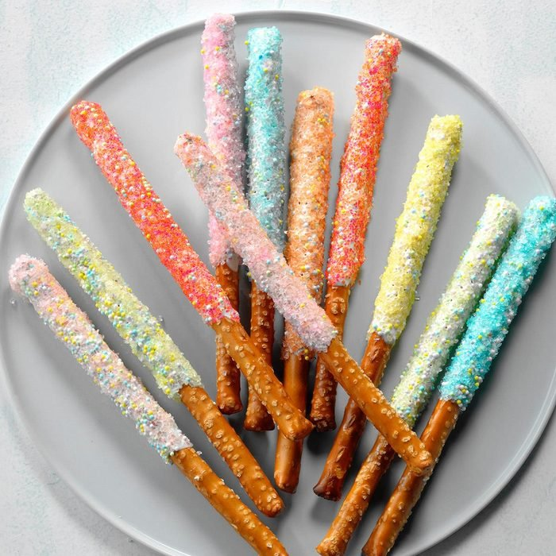

Magic Wands

Ingredients
- 1-1/2 cups white baking chips
- 1 package (10 ounces) pretzel rods
- Colored candy stars or sprinkles
- Colored sugar or edible glitter
Steps
- In a microwave, melt chips; stir until smooth. Dip each pretzel rod halfway into melted chips; allow excess to drip off. Sprinkle coatings with candy stars and colored sugar. Place pretzels on waxed paper; let stand until dry. Store in an airtight container.
Nutricion Facts
1 brownie: 234 calories, 10g fat (5g saturated fat), 31mg cholesterol, 130mg sodium, 35g carbohydrate (29g sugars, 1g fiber), 2g protein.